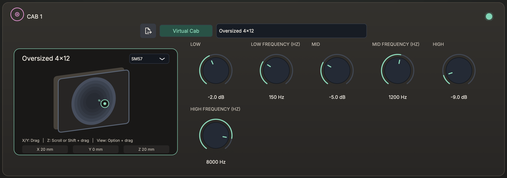

Cabinet IR
Load a cabinet impulse response (IR) from a WAV file.

A guitar tone workstation for macOS with NAM amp captures, cabinet IRs, and effects.

Freq Split. With both amps active in Parallel, set the crossover frequency to send low frequencies to Amp 1 and high frequencies to Amp 2.
Pitch shift, gate, compression, and boost before the amps. Airwindows TakeCare chorus, delay, and reverb after the cabs.
Run the amps in series, then blend two cabinet IRs.

Blend both amps through one shared cabinet IR.

Choose a source for each cab block and adjust its low, mid, and high EQ bands independently.
Load a cabinet impulse response (IR) from a WAV file.
Position a C414, SM57, or SM7B on the Oversized 4×12 in the local standalone development build.

“Warm clean tone with a little chorus.”
After the initial setup, Preset Builder runs locally on your Mac.

Load local NAM captures and cabinet IRs, or pick a capture from TONE3000.
Previous / Next. Open a NAM folder and use the arrows to step through its captures while you play.
TONE3000. Browse tones and select a capture directly in the amp editor.
NAMplified is an independent project and is not affiliated with or endorsed by TONE3000.
Thanks to the developers whose work shapes the sound of NAMplified.
Public downloads are not available yet.